2. Les contextes d'exécution de VBSCRIPT
2.1. Introduction
Un programme vbscript ne s'exécute pas directement sous Windows mais dans un conteneur qui lui fournit un contexte d'exécution et un certain nombre d'objets qui lui sont propres. Par ailleurs, le programme vbscript peut utiliser des objets mis à sa disposition par le système Windows, objets appelés objets ActiveX.
| 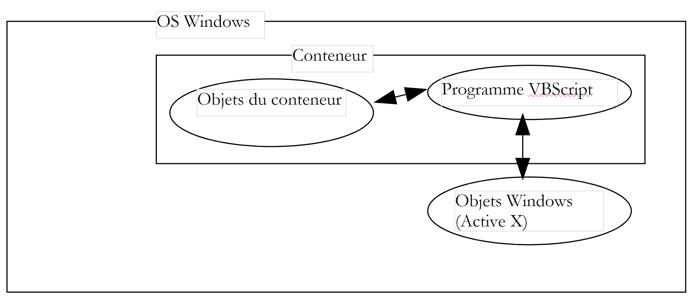 |
Dans ce document, nous utiliserons deux conteneurs : Windows Scripting Host appelé couramment WSH et le navigateur Internet Explorer appelé parfois par la suite IE. Il en existe bien d'autres. Ainsi, les applications MS-Office sont des conteneurs pour un dérivé de VB appelé VBA (Visual Basic pour Applications). Il existe par ailleurs de nombreuses applications windows qui permettent à leurs utilisateurs de dépasser les limites de celle-ci en leur permettant de développer des programmes s'exécutant au sein de l'application et utilisant les objets propres à celle-ci.
Le conteneur dans lequel s'exécute le programme vbscript joue un rôle primordial :
- les objets mis à disposition du programme vbscript par le conteneur changent d'un conteneur à l'autre. Ainsi WSH met à disposition d'un programme vbs un objet appelé WScript qui donne accès, par exemple, aux partages et imprimantes réseau de la machine hôte. IE lui, met à disposition du programme vbs, un objet appelé document qui représente la totalité du document HTML visualisé. Le programme vbs va alors pouvoir agir sur ce document. Excel lui met à disposition d'un programme VBA des objets représentant des classeurs, des feuilles de classeurs, des graphiques, etc.... en fait tous les objets manipulés par Excel.
- si les objets d'un conteneur donnent toute sa puissance à un programme vbscript, il peut parfois en limiter certains domaines. Ainsi un programme vbscript exécuté dans le navigateur IE ne peut pas accéder au disque de la machine hôte, ceci pour des raisons de sécurité.
Donc, lorsqu'on parle de programmation vbscript, il faut indiquer dans quel conteneur le programme est exécuté.
Sous windows, vbscript n'est pas le seul langage utilisable dans les conteneurs WSH ou IE. On peut par exemple utiliser JScript (=JavaScript), PerlScript (=Perl), Python, ... Nombre de ces langages semblent de prime abord supérieurs à vbscript. Mais ce dernier a cependant de sérieux atouts :
- VB et ses déclinaisons VBSCRIPT et VBA sont très répandues sur les machines windows. Connaître ce langage paraît indispensable.
- C'est davantage les objets utilisables par un programme que le langage utilisé par celui-ci qui font sa puissance. Or nombre de ces objets sont fournis par les conteneurs et non par les langages eux-mêmes.
Un inconvénient de VBSCRIPT est qu'il n'est pas portable sur un système autre que Windows, par exemple Unix. Ses concurrents Javascript, Perl, Python eux le sont. Si on doit travailler sur des systèmes hétérogènes, il peut être intéressant voire indispensable d'utiliser le même langage sur les différents systèmes.
2.2. Le conteneur WSH
Le conteneur WSH (Windows Scripting Host) permet l'exécution, au sein de Windows, de programmes écrits en divers langages : vbscript, javascript, perlscript, python, ... Il existe une norme à respecter pour qu'un langage puisse être utilisé au sein de WSH. Tout langage respectant cette norme est candidat à l'exécution au sein de WSH. On peut imaginer que la liste précédente des langages s'exécutant dans WSH puisse s'allonger. Un conteneur met à la disposition des programmes qu'il exécute des objets qui leur donnent leur véritable puissance. Ceci tend à gommer les différences entre langages puiqu'ils utilisent alors tous le même ensemble d'objets. Utiliser un langage plutôt qu'un autre peut devenir alors une simple affaire de goût plutôt que de performances.
L'exécution d'un programme dans WSH se fait à l'aide de deux exécutables : wscript.exe et cscript.exe. wscript.exe se trouve normalement dans le répertoire d'installation de windows appelé généralement %windir% :
Le w de wscript veut dire windows et le c de cscript veut dire console. Un script peut être exécuté indifféremment par wscript ou cscript. La différence réside dans le mode d'affichage de messages à l'écran :
- wscript les affiche dans une fenêtre
- cscript les affiche à l'écran
Voici un script coucou.vbs qui affiche coucou à l'écran :
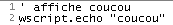
Ouvrons une fenêtre DOS et exécutons-le successivement avec wscript et cscript :
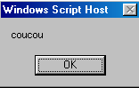
On voit ci-dessus clairement la différence entre les deux modes. Dans ce document, nous utiliserons quasi exclusivement le mode console cscript. C'est le mode qui convient aux applications dites "batch" c'est à dire des applications sans interaction avec un utilisateur au clavier. On notera deux points dans les résultats précédents :
- On a supposé que les exécutables wscript.exe et cscript.exe étaient tous les deux dans le "PATH" de la machine, ce qui permet de les lancer en tapant simplement leurs noms. Si ce n'était pas le cas, il aurait fallu écrire ici :
- On notera que la version de wsh utilisée dans cet exemple et dans la suite du document est la version 5.6.
- Le fichier source du script a le suffixe .vbs. C'est le suffixe désignant un script vbscript, un script javascript étant lui désigné par le suffixe .js.
Le programme cscript a diverses options de lancement qu'on obtient en lançant cscript sans arguments :
L'argument //nologo supprime l'affichage de la bannière de wsh :
2.3. La forme d'un script WSH
Nous venons de voir un premier script : coucou.vbs
Nous avons indiqué que le suffixe .vbs du fichier désignait un script vbscript. Ce n'est pas une obligation. Nous aurions pu mettre le script dans un fichier de suffixe .wsf sous la forme suivante plus complexe :
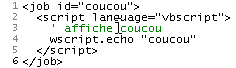
L'exécution de ce script donne la chose suivante :
Un script WSH peut mélanger les langages :
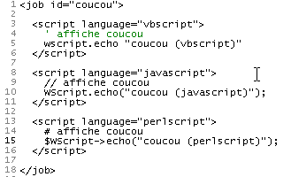
L'exécution de ce script donne la chose suivante :
Nous retiendrons les points suivants :
- Le conteneur WSH n'est pas lié à un langage. Un script wsh peut mélanger les langages dans un fichier de suffixe .wsf
- Le script est alors encadré par des balises <job id="..."> ... </job>
- A l'intérieur de l'application (=job), les langages utilisés par les différentes portions de code sont balisées par <script language="...."> .... </script>
- Ce langage de balisages porte un nom : XML pour eXtended Markup Language. XML ne définit aucune balise mais des règles d'agencement de balises. Ici on devrait donc dire que le langage de balisages utilisé dans un script wsh suit la norme XML.
Par la suite, nous utiliserons exclusivement vbscript dans des fichiers .vbs.
2.4. L'objet WSCRIPT
Le conteneur WSH met à la disposition des scripts qu'il exécute un objet appelé wscript. Un objet a des propriétés et des méthodes :
| 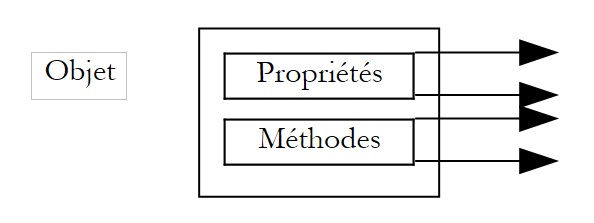 |
Un objet Obj a des propriétés Pi qui fixent son état. Ainsi un objet thermomètre peut avoir une propriété température. Cette propriété est un des aspects de l'état du thermomètre. Une autre pourrait être la température maximale Tmax qu'il peut supporter.
L'objet Obj peut avoir des méthodes Mj qui permettent à des agents extérieurs soit de :
- connaître son état
- changer son état
Ainsi notre thermomètre, s'il est électronique, pourrait avoir une méthode allumer qui le mettrait en marche, une autre éteindre qui l'éteindrait, une autre afficher qui afficherait la température d'équilibre une fois celle-ci atteinte. En termes de programmation, une méthode est une fonction qui peut admettre des arguments et rendre des résultats.
En Vbscript, les propriétés Pi d'un objet Obj sont notées Obj.Pi et les méthodes Mj sont notées Obj.Mj. L'objet wscript de WSH est un objet important pour les méthodes qu'il met à disposition des scripts. Ainsi sa méthode echo permet d'afficher un message. La syntaxe de cette méthode est la suivante :
Les valeurs des arguments argi sont alors affichées dans une fenêtre (exécution par wscript) ou à l'écran (exécution par cscript sous DOS).
2.5. Le conteneur Internet Explorer
Nous avons écrit plus haut que Internet Explorer pouvait être un conteneur pour un script vbscript. Montrons-le sur un exemple simple. Suit une page HTML (HyperText Markup Language) appelée coucou2.htm ne contenant pas de script vbscript.
21
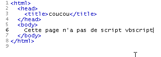
Son chargement direct par Internet Explorer (Fichier/Ouvrir) donne les résultats suivants :
| 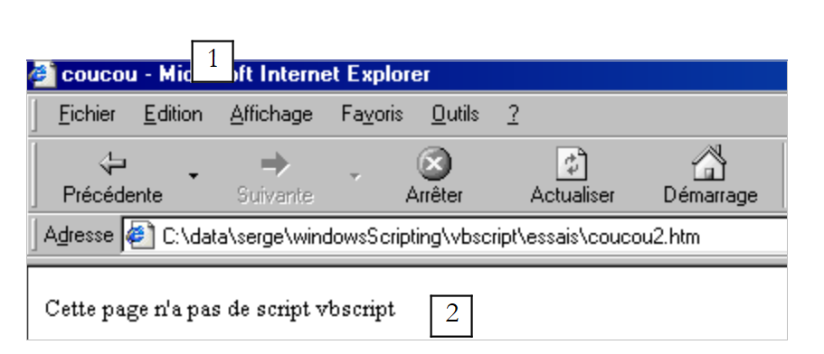 |
Le contenu du fichier coucou2.htm nous montre que HTML est un langage de balisage. Connaître le langage HTML c'est connaître ces balises. Celles-ci ont pour but principal d'indiquer au navigateur comment afficher un document. HTML ne suit pas exactement la norme XML mais en est proche.
Dans coucou2.htm, il y a deux informations à représenter notées 1 et 2. Nous les avons représentées également dans l'affichage qui en a été fait. C'est la balise <title>...</title> qui a fait que l'information 1 a été placée dans la barre de titre du navigateur et la balise <body>..</body> qui a fait que l'information 2 a été placée dans la partie document du navigateur.
Nous n'entrerons pas davantage dans l'étude du langage HTML. Modifions le fichier coucou2.htm en y introduisant un script vbscript et appelons-le maintenant coucou1.htm :
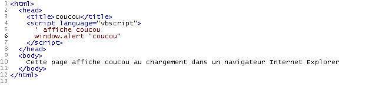
Le script vbscript a été placé dans la balise <head>...</head>. Il aurait pu être placé ailleurs. Il affiche "coucou" au chargement initial de la page. Ici, le navigateur doit être Internet Explorer car seul ce navigateur est par défaut un conteneur pour des scripts vbscript. L'affichage obtenu est alors le suivant :
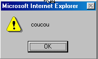
suivi de l'affichage normal de la page :
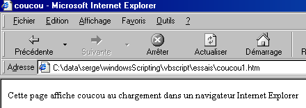
Le script exécuté était le suivant :
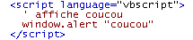
Alors que le conteneur WSH mettait à disposition du script un objet appelé wscript permettant de faire des affichages avec sa méthode echo, ici IE met à disposition du script un objet window permettant de faire des affichages avec la méthode alert. Ainsi pour afficher "coucou", on écrit wscript.echo "coucou" dans WSH et window.alert "coucou" dans IE. On peut montrer ici aussi qu'en fait on peut utiliser plusieurs langages dans le conteneur IE. Nous reprenons l'exemple déjà présenté dans WSH au sein d'une page coucou3.htm :
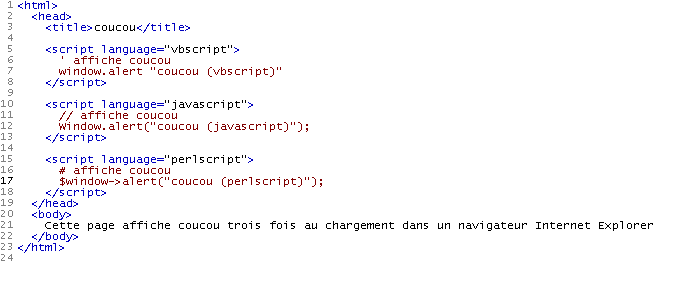
Le chargement de cette page par IE affiche tout d'abord trois fenêtres d'information :
| 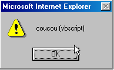 | 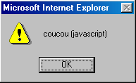 | 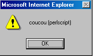 |
avant d'afficher la page finale :
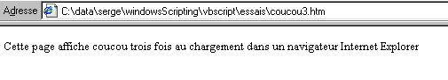
2.6. L'aide de WSH
WSH vient avec un système d'aide situé habituellement dans le dossier "C:\Program Files\Microsoft Windows Script\ScriptDocs". pour la version 5.6 de WSH, le fichier d'aide s'appelle "SCRIPT56.CHM". Il suffit de double-cliquer sur ce fichier pour avoir accès à l'aide. Il peut être pratique d'en avoir un raccourci sur son bureau.
Une fois lancé, on a quelque chose comme suit :
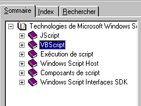
On y trouve l'aide du conteneur WSH mais également celle pour les langages vbscript et javascript. C'est un outil indispensable à la fois pour le débutant et le programmeur confirmé. Il y a plusieurs façons de travailler avec cette aide :
- on ne sait pas trop ce qu'on cherche. On veut simplement découvrir ce qui est proposé. L'onglet Sommaire ci-dessus peut être alors utilisé. On peut par exemple regarder ce qui est proposé pour vbscript :
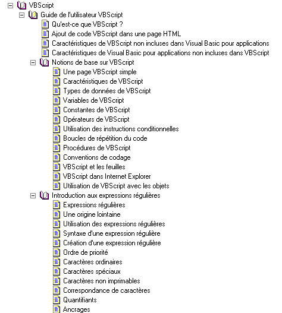
Vous découvrirez dans l'aide de VBscript de nombreuses informations qui ne sont pas dans ce document.
- vous pouvez chercher quelque chose de précis, par exemple la façon d'utiliser la fonction msgbox de VBscript. Utilisez alors l'onglet Rechercher :

L'aide ramène toutes les rubriques qui ont un rapport avec le mot recherché. En général, les premières rubriques proposées sont les plus pertinentes. C'est le cas ici où la première rubrique proposée est la bonne. Il suffit de double-cliquer dessus pour avoir l'information de cette rubrique :
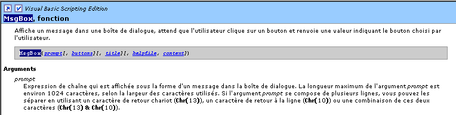